Teacher Velocity Field Analysis
Why 9B→4B and HY→4B blur while 32B→4B improves: all teachers are queried on the same 4B-visited states, separating correction geometry from rollout drift.
Visual training trajectories
Matched GenEval gs=1 prompts. Student snapshots progress left-to-right; teacher output is the final column.
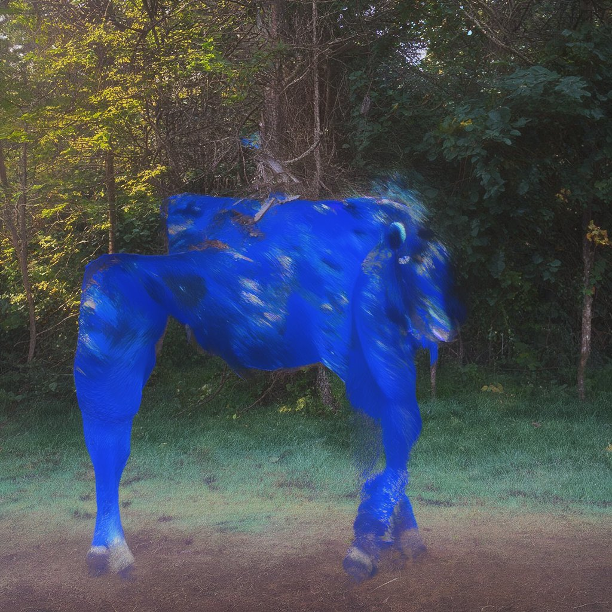
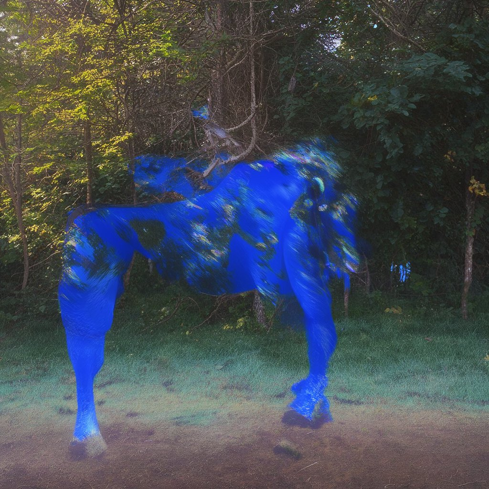
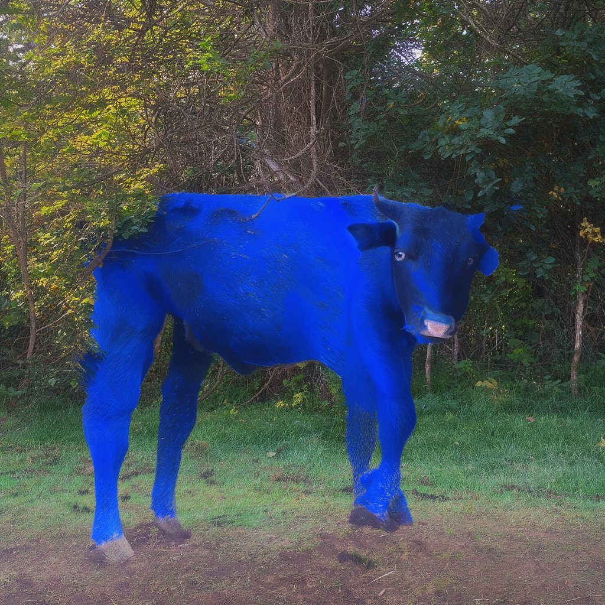
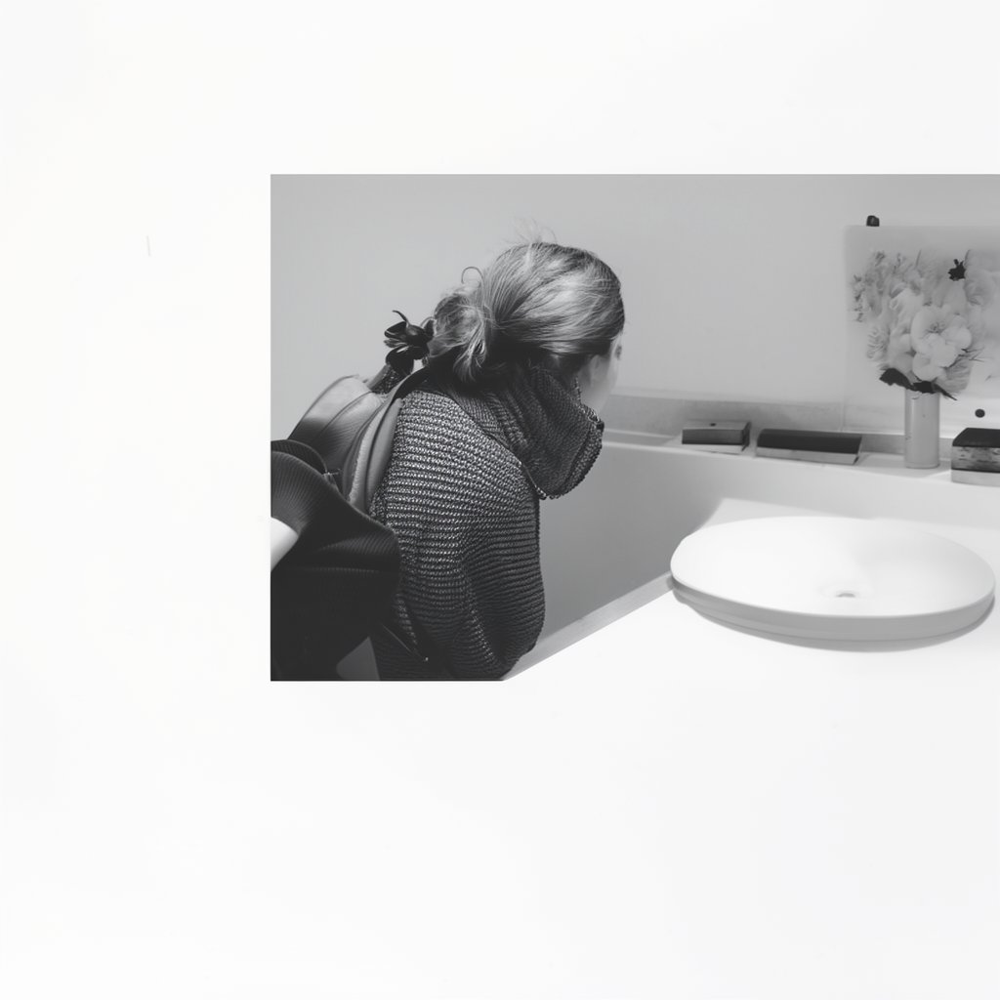
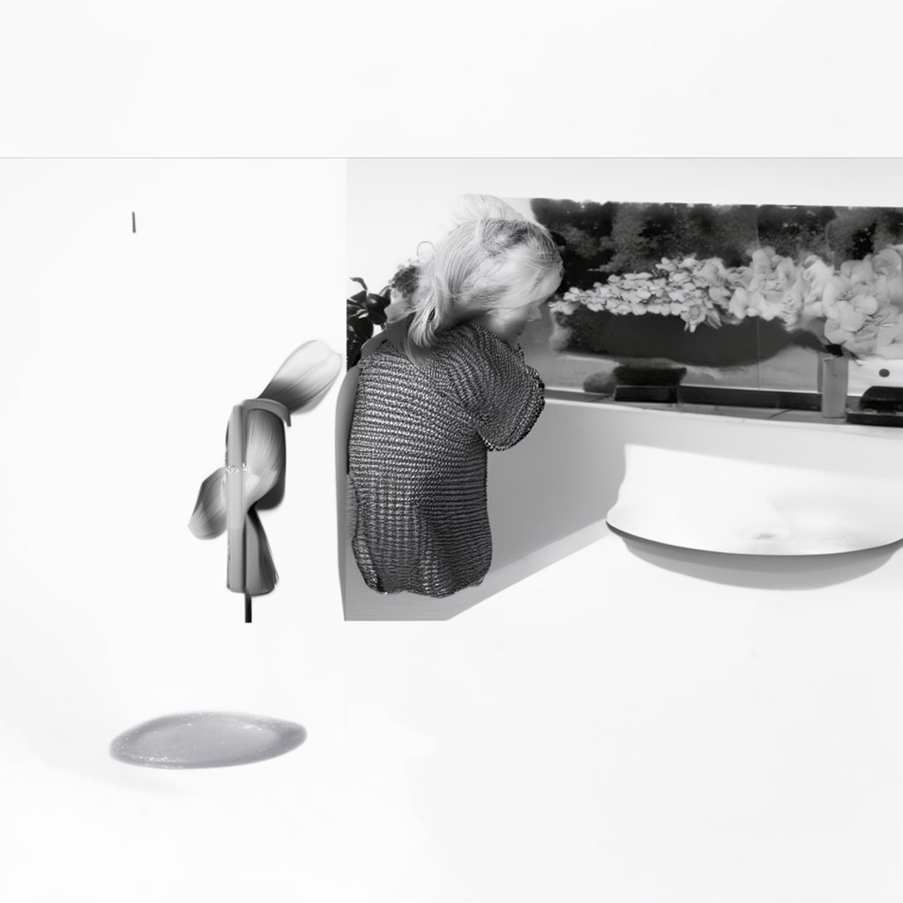
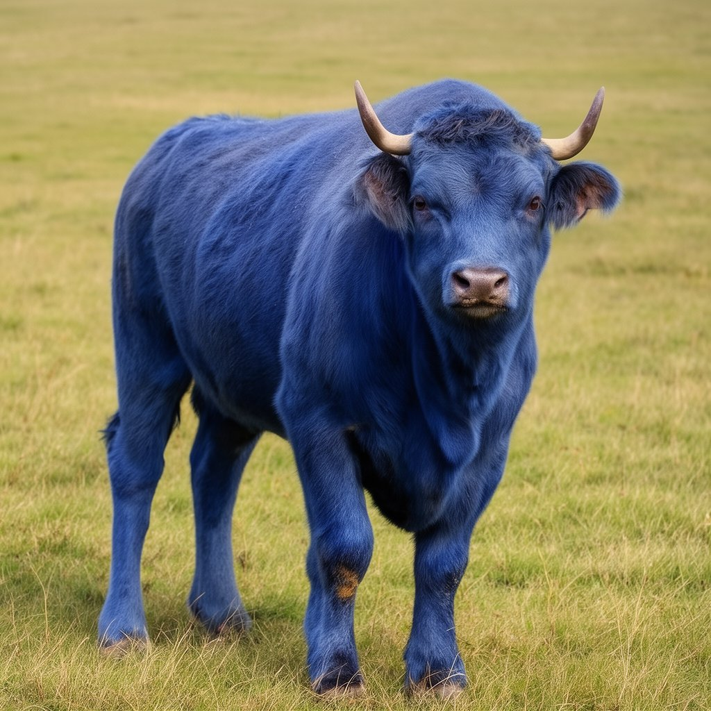
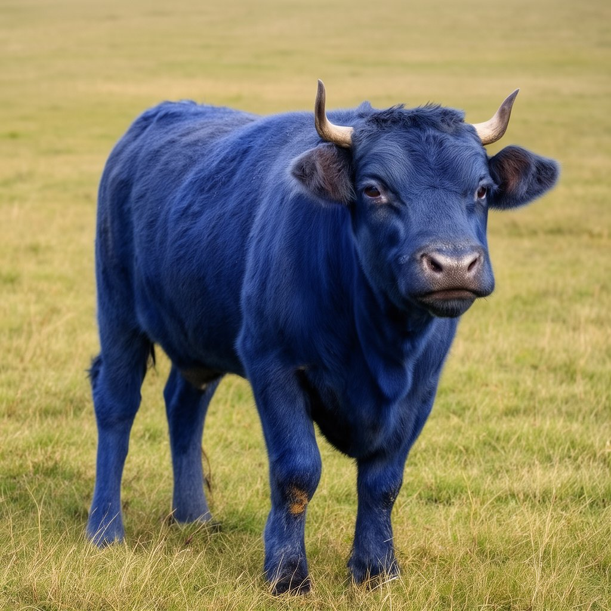
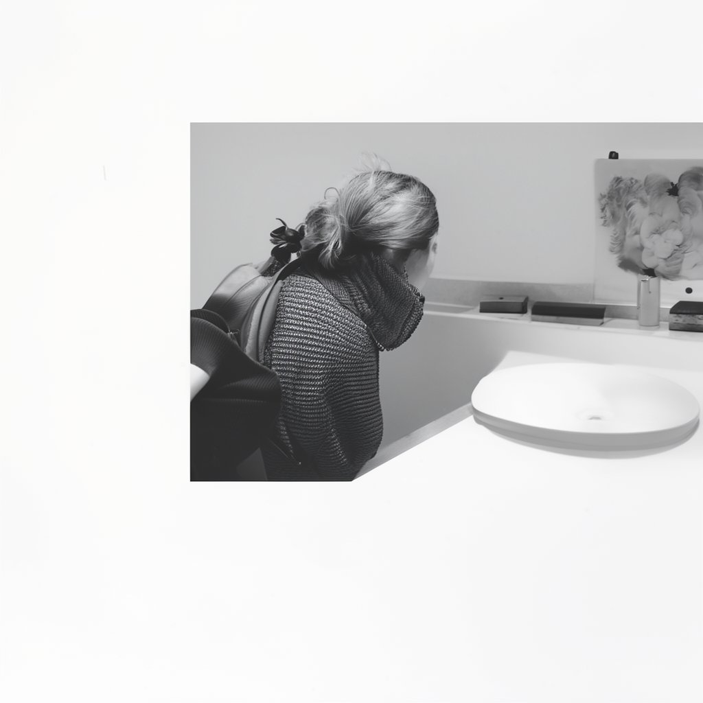
Student runs: ln5ureh6 (9B→4B), 4wvzbt8g (32B→4B). Student: 1024px, 28 steps, epochs 0/20/40/60/80. 9B teacher: 28 steps. 32B teacher: same seed/gs=1/1024px, 40 steps from uilxegpn because the historical 28-step run did not log teacher media.
Field geometry over the denoising trajectory
The harmful teachers are not oversized versions of the useful teacher. Their corrections are smaller and point in different directions.
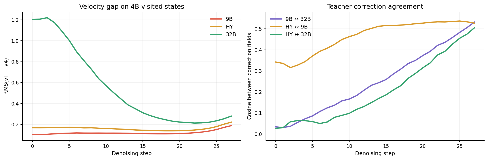
9B is not “too strong”
Its correction RMS is roughly 4.6× smaller than 32B.HY is 9B-like
cos(ΔHY, Δ9)=0.464, versus cos(ΔHY, Δ32)=0.203.Direction matters
cos(Δ9, Δ32)=0.250; disagreement is strongest in early, high-noise steps.Direct latent signature of blur
Negative alignment means the teacher correction cancels spatial changes already present in the 4B clean prediction. Positive alignment reinforces them.
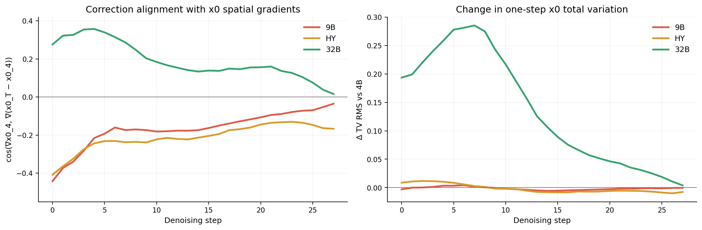
Offline threshold calibration from alignment and velocity gap
A detached sample-step gate combines direction and magnitude. The known-good 32B distribution defines the target 1% false-mask rate.
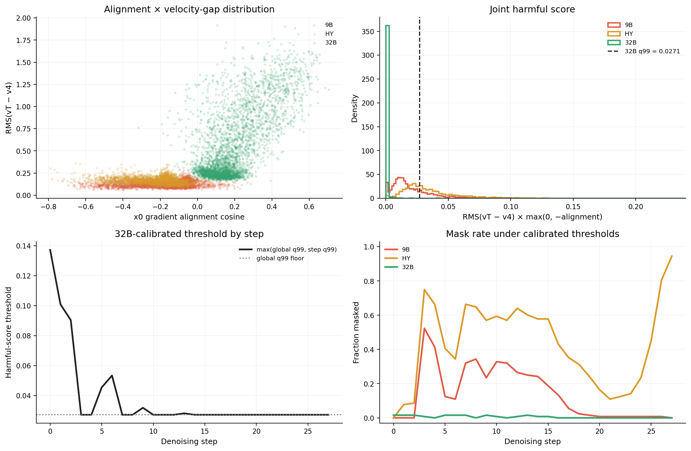
Interpretation
9B→4B
The teacher is close in raw velocity magnitude but systematically anti-aligned with x0 detail, explaining gradual blur despite tighter matching.HY→4B
HY reproduces the same anti-detail signature and is geometrically closer to 9B than to the successful 32B teacher.32B→4B
A much larger correction is beneficial because it reinforces spatial gradients and raises one-step x0 total variation.Inputs: /apdcephfs_fsgm3/share_305110755/hunyuan/bowenping/xopd/diagnostics/teacher_gap_v1/analysis/teacher_velocity_x0_analysis.json,
/apdcephfs_fsgm3/share_305110755/hunyuan/bowenping/xopd/diagnostics/teacher_gap_v1/analysis/hy/hy_teacher_field_analysis.json, and
/apdcephfs_fsgm3/share_305110755/hunyuan/bowenping/xopd/diagnostics/teacher_gap_v1/analysis/mask_thresholds/teacher_mask_thresholds.json.
Generated locally by build.py.